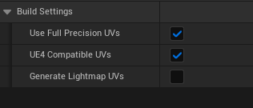
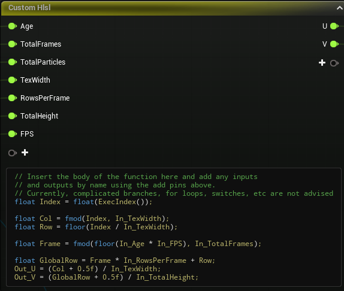
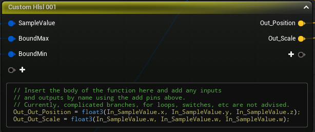
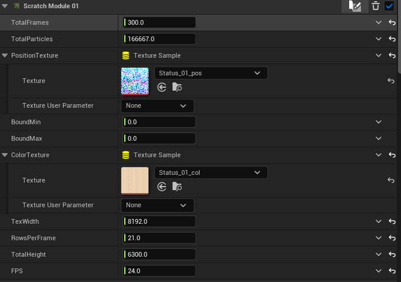

← 部落格 × Special Project | PART2


第 6 周
第 6 周计划：
-
完成论文初稿（USD 流程）
-
尝试 VAT 粒子，并与 Niagara 搭配
Houdini VAT 与 Niagara 测试
由于 Niagara 在把大量粒子汇入 Unreal 时有限制，而 VAT Particle Sprites 又只支援卡片形状的几何体，我在测试能否从 VAT 贴图中取出位置、旋转等资料再喂给 Niagara。这样就能用 Niagara 的 Mesh Renderer 把粒子算成球体或任何 3D 形状。
只能算出卡片形状
VAT 测试
为了快速从 Houdini 汇入 50 万个粒子，我先用 VAT 把粒子运动烘焙成贴图。由于模拟的点数是 50 万，而每格上限是 221,184，我依照 ID 属性把粒子分成多组，让每组都不超过上限。
另一个问题是，汇入 VAT Particle Sprites 时，阴影形状和套用材质前的原始网格一样。
网格没有指定材质。
开启「Evaluate World Position Offset in Ray Tracing」后，阴影 pass 会依照 WPO 位移后的位置计算网格形状，而不是原始几何体。

为了解决这个问题，我也尝试结合 VAT 与 Niagara：从 VAT 位置贴图取出资料再套用到 Niagara。这样在 Niagara 系统中就能选择任何形状来呈现粒子。另外，网格需要使用全精度 UV。
这个 Niagara 模组读取 VAT 资料的方式是：先在 Custom HLSL 节点中计算 UV 座标，用每个粒子的索引和目前时间决定要从 VAT 贴图取样哪个像素。U 和 V 输出组合成 Vector2D，再送进两个贴图取样器，一个取位置贴图、一个取颜色贴图。取样得到的位置值介于 0 到 1 之间，再用 Houdini 输出的边界框最小值与最大值重新映射到世界座标。最后透过 Map Set 节点把结果写回每个粒子的 Position、Scale 和 Color 属性。这让 Niagara 能以即时效能，用 Houdini 预先模拟的资料驱动数十万个粒子。
这个 HLSL 模组把每个粒子的索引和目前时间转换成取样 VAT 贴图用的 UV 座标。所有关键参数都开放成输入，不用改程式码就能在不同的 VAT 设定中重复使用。

这个 HLSL 模组把每个粒子的索引和目前时间转换成取样 VAT 贴图用的 UV 座标。所有关键参数都开放成输入，不用改程式码就能在不同的 VAT 设定中重复使用。

这个节点从取样后的 VAT 贴图中取出位置与缩放资料。RGB 通道存放粒子的 XYZ 位置，Alpha 通道则存放统一的缩放值，平均套用到三个轴上。

汇入新的 VAT 粒子贴图后，所有参数都可以在这里调整。
一开始我用 Mesh Renderer 搭配球体，但因为要算 50 万个点，FPS 非常低，大约只有 18。
另外要注意，为了避免粒子闪烁，Motion Vectors 要设为 Disable。如果还是闪烁，阴影也要关掉。
这是结合 VAT 与 Niagara 的最终结果，阴影正确显示，FPS 也维持得不错。